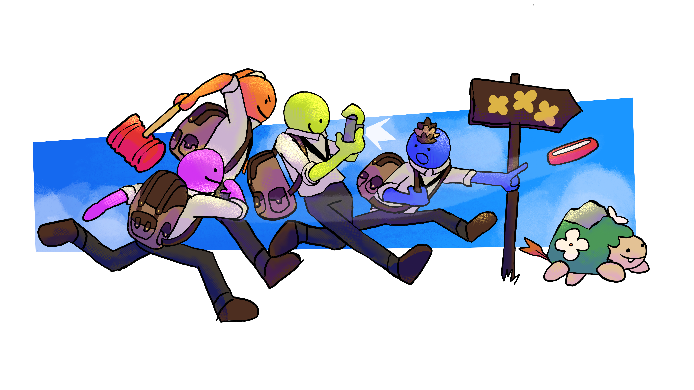
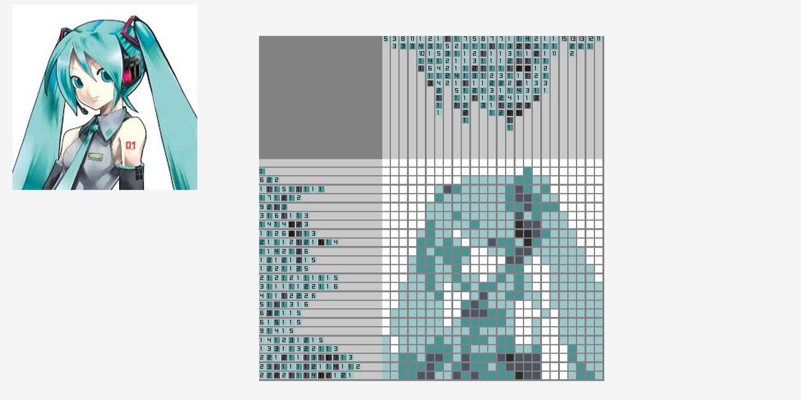

My Projects
shutterbuds
Take funny pictures and complete quests with your friends!

Click here to access the steam page! Shutterbuds is a multiplayer photography game that lets you and three others take pictures of unique critters. As the UI and Systems programmer, I handled all quest board programming, including setting up the quest infrastructure and programming the diegetic UI for it. Additionally, I worked on camera detection for critters and other objects, plus other UI like the journal and the shop.
Picross
Play picross with any square image you uploaded

Click here to access the github page! Upload an image and the program will generate a colored picross puzzle to play. Choose different difficulties and complete puzzles of your favorite images.
Sudoku
Initial description of project
A more further in-depth description of the project. Including my contributions to it and some pictures of the game itself.